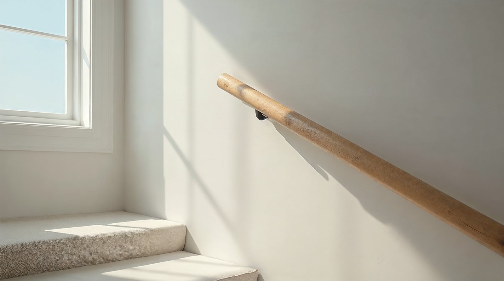
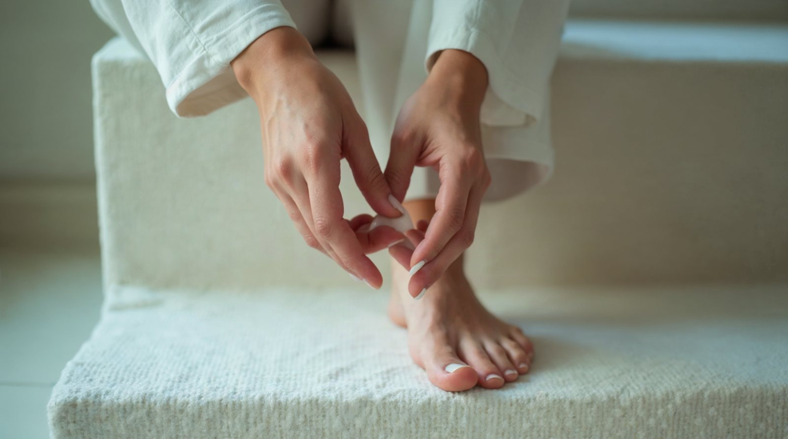
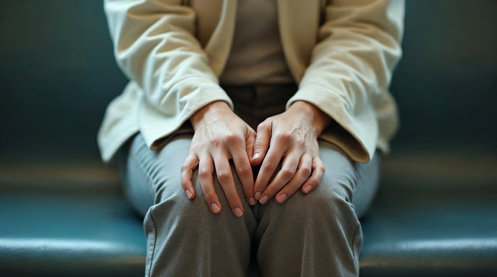
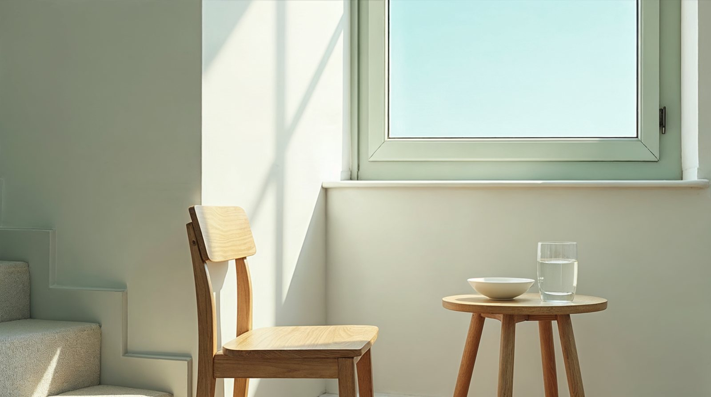
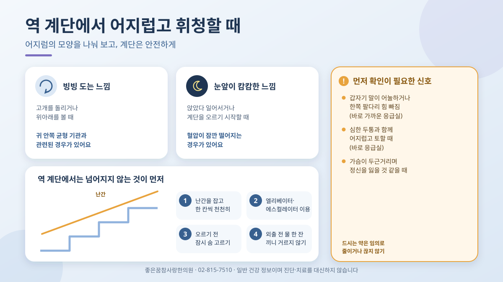

이종호 한의사 감수좋은꿈참사랑한의원 대표원장 (한의사 면허번호 19769)발행 2026-11-24 · 수정 2026-11-26
이 글의 차례
- 왜 이런 불편이 생길 수 있나요
- 왜 계단에서 유독 어지러움이 잘 생길까요
- 어지럼의 모양에 따라 살피는 점이 다릅니다
- 먼저 이렇게 여쭙니다
- 상황별 예시
- 스스로 점검해 보세요
- 일상에서 먼저 해 볼 수 있는 것
- 일어설 때는 세 단계로 나눠 보세요
- 역에서는 이렇게 다녀 보세요
- 다리 힘은 이렇게 기를 수 있습니다
- 신발과 짐도 다시 살펴보세요
- 물과 식사, 집 안 환경도 함께 살펴보세요
- 날씨와 계절에 따라서도 달라집니다
- 가족이 함께 살펴 주실 것
- 넘어질 뻔했을 때는 이렇게 하세요
- 한의원에서 함께 살필 수 있는 경우
- 얼마나 지켜보고 언제 상담할까요
- 이렇게 기록해 오시면 상담이 쉬워집니다
- 이런 증상은 먼저 확인이 필요합니다
역 계단에서 어지럽고 다리가 휘청한다면, 먼저 난간을 잡고 한 칸씩 천천히 다니거나 엘리베이터를 이용해 넘어지지 않는 것이 가장 중요합니다. 어지럼은 일어설 때 혈압이 떨어지는 경우, 귀의 문제, 약, 탈수 등 원인이 여러 가지라 반복된다면 양상을 자세히 살펴봐야 합니다.
나이가 들수록 계단에서 한 번 휘청한 기억이 다음 외출을 망설이게 만들기도 합니다. 그렇게 밖에 나가는 날이 줄면 다리 힘이 더 빠지고, 다시 계단이 무서워지는 흐름이 생기기 쉽습니다. 넘어지지 않게 조심하면서도 움직임을 이어 가는 방법을 함께 찾아보는 것이 중요합니다.
왜 이런 불편이 생길 수 있나요
- 앉았다 일어서거나 계단을 오르기 시작할 때 혈압이 잠깐 떨어지며 눈앞이 캄캄해질 수 있습니다.
- 고개를 돌리거나 위아래를 볼 때 빙빙 도는 어지럼은 귀 안쪽의 균형 기관과 관련된 경우가 있습니다.
- 혈압약이나 수면제 등 일부 약, 물을 적게 마신 날, 식사를 거른 날 더 어지러울 수 있습니다.
- 다리 근력이 줄면 작은 흔들림에도 휘청하기 쉽습니다.
왜 계단에서 유독 어지러움이 잘 생길까요
계단을 오르면 평지를 걸을 때보다 심장과 다리가 훨씬 많은 일을 합니다. 지하철 의자에 앉아 있다가 내리자마자 계단을 오르면, 몸이 그 변화에 맞춰 혈압과 맥박을 올릴 틈 없이 움직이게 되어 머리 쪽으로 가는 혈액이 잠깐 부족해질 수 있습니다.
내려갈 때는 눈으로 계단 끝을 확인하며 고개를 숙이게 됩니다. 이때 균형을 잡는 귀 안쪽 기관과 눈, 발바닥 감각이 서로 맞춰야 하는데, 나이가 들면 이 맞추는 속도가 조금씩 느려져 휘청하기 쉬워집니다.
역 계단은 사람 흐름에 맞춰 빠르게 오르내리게 되고, 조명이 고르지 않거나 계단 끝 표시가 잘 보이지 않는 곳도 있습니다. 여기에 무거운 짐까지 들면 몸의 균형을 잡기가 더 어려워집니다.
어지럼의 모양에 따라 살피는 점이 다릅니다
- 앉았다 일어설 때나 계단을 오르기 시작할 때 눈앞이 캄캄해지는 경우에는 혈압과 드시는 약, 물과 식사를 먼저 봅니다.
- 누워서 돌아눕거나 고개를 들고 숙일 때 주변이 빙빙 도는 경우에는 귀 안쪽 균형 기관과 관련된 어지럼인지 살피고, 필요하면 이비인후과 검사를 안내합니다.
- 도는 느낌은 없는데 걸을 때 다리가 풀리고 몸이 기우는 경우에는 다리 근력과 걸음걸이, 발바닥 감각을 함께 봅니다.
- 뒷목이 뻣뻣하고 머리가 무거우면서 어지러운 경우에는 목과 어깨의 긴장, 잠의 흐름을 함께 여쭙니다.
- 약을 새로 시작하거나 바꾼 뒤부터 어지러운 경우에는 처방한 의사와 먼저 상의하시도록 안내합니다.

먼저 이렇게 여쭙니다
- 어지러움이 빙빙 도는 느낌인가요, 눈앞이 캄캄해지는 느낌인가요?
- 계단을 오를 때인가요, 내려갈 때인가요?
- 혈압약이나 다른 약을 드시고 계신가요?
- 식사를 거르거나 물을 적게 드신 날 더 심한가요?
- 어지럼은 몇 초 만에 가라앉나요, 몇 분 넘게 이어지나요?
- 최근에 넘어지거나 넘어질 뻔한 적이 있나요?
- 밤에 화장실에 가려고 일어날 때도 어지러우신가요?
- 집 안에서 넘어질 뻔한 곳이 있나요? 욕실이나 문턱처럼요.
상황별 예시
- 예를 들어 지하철에서 앉아 졸다가 내릴 역 안내에 서둘러 일어나 계단으로 향하는 경우, 일어서는 동작과 계단 오르기가 한꺼번에 겹쳐 눈앞이 캄캄해지기 쉽습니다. 내리기 한 정거장 전에 미리 자세를 바로 하고, 내린 뒤에는 승강장에서 잠시 숨을 고른 다음 움직여 보세요.
- 예를 들어 아침을 거르고 병원 진료를 보러 나선 날 역 계단에서 휘청한 경우, 빈속과 적은 물, 아침에 드신 혈압약이 겹쳐 있을 수 있습니다. 외출 전에는 가볍게라도 드시고 물을 한 잔 마신 뒤 나서시길 권합니다.
- 예를 들어 시장에서 장을 본 무거운 봉지를 양손에 들고 계단을 내려가는 경우, 난간을 잡을 손이 없고 발밑도 잘 보이지 않아 휘청할 때 몸을 지탱하기 어렵습니다. 짐은 바퀴 달린 장바구니에 담아 엘리베이터를 이용하시거나, 한 손은 늘 비워 두세요.
- 예를 들어 오랜만에 멀리 외출해 처음 가 보는 환승역을 지나는 경우, 낯선 계단과 사람 흐름에 서두르다 발을 헛디디기 쉽습니다. 출발 전 엘리베이터 위치를 지도 앱으로 미리 확인해 두면 마음이 한결 편합니다.
스스로 점검해 보세요
- 앉았다 바로 일어나 걷기 시작하는 습관이 있다
- 하루에 마시는 물이 서너 잔이 안 된다
- 끼니를 거르고 외출하는 날이 많다
- 최근 몇 달 사이 새로 시작하거나 바꾼 약이 있다
- 계단을 오르내릴 때 난간을 잡지 않는다
- 걸을 때 발이 끌리거나 보폭이 예전보다 짧아졌다
- 밤에 화장실에 가려고 일어날 때 휘청한 적이 있다
- 밑창이 닳거나 뒤꿈치가 헐렁한 신발을 자주 신는다
- 계단에서 양손에 짐을 들고 다니는 날이 많다
해당하는 항목이 많다면 일어서는 습관과 물, 끼니, 계단 다니는 법부터 바꿔 볼 신호입니다.

일상에서 먼저 해 볼 수 있는 것
- 계단에서는 꼭 난간을 잡고 한 칸씩 천천히 오르내리기
- 가능하면 엘리베이터나 에스컬레이터 이용하기
- 앉았다 일어서거나 계단을 오르기 전 잠시 숨 고르기
- 외출 전 물을 한 잔 마시고 끼니 거르지 않기
일어설 때는 세 단계로 나눠 보세요
앉아 있다가 일어설 때는 먼저 발목을 몇 번 위아래로 움직이고, 엉덩이를 의자 앞쪽으로 옮긴 뒤, 손으로 무릎이나 의자를 짚고 천천히 일어서 보세요. 일어선 뒤에는 바로 걷지 말고 몇 초 서서 몸이 자리를 잡기를 기다립니다.
아침에 잠자리에서 일어날 때도 마찬가지입니다. 눈을 뜨면 누운 채로 손발을 몇 번 움직이고, 옆으로 돌아누워 팔로 짚고 일어나 침대 가장자리에 잠시 앉아 있다가 일어서세요.
이렇게 나눠서 움직이면 몸이 혈압을 맞출 시간을 벌 수 있습니다. 처음에는 번거롭게 느껴져도 습관이 되면 자연스러워집니다. 지하철에서 내릴 때도 같은 순서를 떠올려 보세요.
역에서는 이렇게 다녀 보세요
자주 이용하는 역은 엘리베이터와 에스컬레이터가 있는 출구를 미리 알아 두세요. 계단을 이용해야 할 때는 사람이 몰리는 가운데보다 난간이 있는 가장자리로 붙어 다니시길 권합니다.
계단을 오르기 전에는 한 번 멈춰 숨을 고르고, 오르는 중에도 중간 층계참에서 잠시 쉬어 가세요. 내려갈 때는 발밑을 보되 고개를 깊이 숙이지 말고, 시선을 두세 칸 앞에 두면 균형을 잡기가 조금 쉽습니다.
출퇴근 시간처럼 사람이 많은 때는 피해서 다니시고, 서두르지 않도록 시간 여유를 두고 나서 보세요. 지팡이를 쓰신다면 계단에서는 난간을 잡는 쪽과 반대 손에 들어 주세요.
다리 힘은 이렇게 기를 수 있습니다
다리 힘이 받쳐 주면 작은 흔들림이 와도 버틸 수 있습니다. 의자에 앉았다 일어서기를 천천히 다섯 번에서 열 번, 식탁을 잡고 발뒤꿈치 들었다 내리기를 열 번 정도 하루 두 번 해 보세요.
평지 걷기는 가장 쉬운 다리 운동입니다. 하루 20~30분, 동네 공원이나 평지 산책로를 걸으며 다리 힘을 길러 보세요. 어지럼이 잦은 동안에는 가족과 함께 걷거나, 벤치가 있는 길을 고르시길 권합니다.
운동 중에 어지럽거나 휘청하면 바로 멈추고 앉아서 쉬세요. 맞는 동작과 양은 진료 때 몸 상태를 보고 함께 정해 드립니다.
신발과 짐도 다시 살펴보세요
밑창이 닳아 미끄럽거나, 굽이 높거나, 발에 헐렁한 신발은 계단에서 휘청하기 쉽게 만듭니다. 밑창이 고무로 되어 미끄럽지 않고, 발등을 잘 감싸며, 뒤꿈치가 낮고 넓은 신발을 골라 보세요.
가방은 한쪽 어깨에 메는 것보다 등에 메는 가방이 몸의 균형을 잡는 데 유리합니다. 계단에서 두 손이 자유로워야 난간을 잡을 수 있으니, 손에 드는 짐은 되도록 줄이시길 권합니다.
안경을 쓰신다면 계단을 내려갈 때 다초점 안경의 아래쪽으로 발밑을 보면 거리가 흐릿하게 보일 수 있습니다. 계단에서는 고개를 조금 더 숙여 안경 위쪽으로 보거나, 시력이 바뀐 것 같다면 안과에서 한번 확인해 보세요.
물과 식사, 집 안 환경도 함께 살펴보세요
나이가 들면 목마름을 덜 느껴 물을 적게 마시게 되는 분이 많습니다. 아침에 일어나서, 식사 사이, 외출 전처럼 시간을 정해 물을 조금씩 드셔 보세요. 다만 심장이나 콩팥 때문에 물의 양을 따로 안내받으셨다면 그 안내를 따르시면 됩니다.
끼니를 거르면 기운이 떨어지고 어지럼도 쉽게 옵니다. 세 끼를 일정한 시각에 드시고, 외출이 길어질 때는 간단한 간식을 챙겨 가세요.
집 안에서도 밤에 화장실 가는 길에 작은 조명을 켜 두고, 미끄러운 깔개나 바닥의 전선은 치워 두세요. 욕실에는 미끄럼 방지 매트를 깔면 넘어지는 일을 줄이는 데 도움이 됩니다.
날씨와 계절에 따라서도 달라집니다
여름에는 땀으로 물이 빠져나가 몸의 물이 부족해지기 쉽고, 더운 바깥에서 시원한 역 안으로, 다시 더운 계단으로 오가며 혈압이 크게 오르내립니다. 더운 날에는 물을 평소보다 자주 드시고, 한낮 외출은 줄여 보세요.
겨울에는 두꺼운 옷과 장갑 때문에 몸놀림이 둔해지고, 찬 바람에 몸이 움츠러들어 걸음이 짧아집니다. 젖은 계단이나 눈 묻은 신발 바닥은 미끄럽기 쉬우니 역에 들어서면 신발 바닥을 한 번 털고, 난간을 잡을 수 있도록 장갑은 미끄럽지 않은 것으로 골라 주세요.
가족이 함께 살펴 주실 것
어르신은 어지러웠던 일을 가족에게 걱정을 끼칠까 봐 말하지 않는 경우가 많습니다. 함께 걸을 때 걸음이 느려졌는지, 계단 앞에서 머뭇거리시는지, 앉았다 일어나실 때 벽을 짚으시는지 눈여겨봐 주세요.
드시는 약이 여러 가지라면 가족이 약 목록을 한 장에 정리해 드리는 것도 큰 도움이 됩니다. 여러 병원에서 처방받은 약이 겹치거나, 약을 드시는 시각이 헷갈리는 경우가 생각보다 많습니다.
진료 때 가족이 함께 오시면 어지러웠던 날의 모습을 옆에서 본 대로 이야기해 주세요. 본인은 순간이 지나면 잘 기억하지 못하는 일도 가족이 기억하는 경우가 많습니다.
넘어질 뻔했을 때는 이렇게 하세요
계단에서 어지럼이 오면 그 자리에서 난간을 두 손으로 잡고 계단에 앉으세요. 남은 몇 칸을 서둘러 내려가거나 오르려 하면 오히려 넘어지기 쉽습니다.
어지럼이 가라앉은 뒤에도 바로 일어나지 말고 잠시 더 앉아 숨을 고르세요. 주변 사람이나 역무원에게 도움을 청하는 것도 부끄러운 일이 아닙니다. 그날은 남은 일정을 줄이고 엘리베이터로 이동하시길 권합니다.

한의원에서 함께 살필 수 있는 경우
- 어지럼이 반복되는 경우 어지러운 양상과 잠, 식사, 몸의 기력을 함께 살핍니다.
- 목과 어깨가 뻣뻣하고 두통이 함께 있는 경우 몸의 긴장을 함께 살핍니다.
- 필요하다고 판단되면 신경과나 이비인후과 검사를 안내합니다.
좋은꿈참사랑한의원에서는 모든 분께 맥부터 짚으며 어지러운 순간과 양상, 드시는 약을 자세히 여쭙고, 필요하면 설진으로 기력과 몸 상태를 함께 살핍니다. 그 뒤 침이나 한약 상담 등 그날 필요한 방법을 정합니다. 보호자가 함께 오시면 평소 모습도 여쭙습니다.
계단을 올라 서둘러 오셨다면 잠시 앉아 숨을 고르신 뒤 맥을 짚습니다. 서 있는 모습과 걷는 모습도 함께 보며 몸이 한쪽으로 기우는지, 발이 끌리는지를 살핍니다. 한약을 상담할 때는 드시는 약을 모두 확인한 뒤에 판단하니 약 봉투나 처방전을 가져와 주세요.
다시 오시면 지난번 이후 어지러웠던 날과 상황, 일어서는 습관을 바꿔 보셨는지부터 이어서 여쭙고 다음 걸음을 정합니다.
얼마나 지켜보고 언제 상담할까요
- 일어서는 습관과 물, 끼니, 계단 다니는 법을 바꾼 뒤 2주 정도 어지러웠던 날과 상황을 적으며 지켜보세요.
- 바꿔 보아도 어지럼이 계속 되풀이되거나, 휘청하는 일이 잦아 외출이 꺼려진다면 상담을 권합니다.
- 약을 새로 시작하거나 바꾼 뒤부터 어지럽다면 그 기록을 들고 처방한 의사와 먼저 상의하세요.
- 어지럼이 줄었더라도 계단에서 난간을 잡는 습관과 일어서는 순서는 계속 이어 가세요. 습관으로 남겨 두면 다시 어지러운 날에도 몸을 지킬 수 있습니다.
- 넘어진 일이 있었다면 다친 곳이 없어 보여도 진료 때 꼭 말씀해 주세요. 그 뒤로 걸음이 위축되지 않았는지 함께 살펴봅니다.

이렇게 기록해 오시면 상담이 쉬워집니다
- 어지러웠던 날, 시간, 상황
- 어지럼의 모양(빙빙 돎, 캄캄함, 휘청거림)
- 드시는 약 전체
- 집에서 잰 혈압(있다면)
- 그날 마신 물의 양과 식사를 거른 여부
- 어지럼이 가라앉기까지 걸린 시간
- 넘어지거나 넘어질 뻔했던 장소
이런 증상은 먼저 확인이 필요합니다
- 갑자기 얼굴 한쪽이 처지거나 말이 어눌해지거나, 한쪽 팔다리에 힘이 빠지는 경우
- 가슴 통증이나 숨참, 갑자기 생긴 극심한 두통, 정신을 잃은 일 가운데 하나라도 있는 경우
이런 신호가 있으면 한의원보다 가까운 병원이나 응급실을 먼저 찾으세요.

여쭙는 것
- 어지러움이 빙빙 도는 느낌인가요, 눈앞이 캄캄해지는 느낌인가요?
- 계단을 오를 때인가요, 내려갈 때인가요?
- 혈압약이나 다른 약을 드시고 계신가요?
생활에서 해 볼 것
- 계단에서는 꼭 난간을 잡고 한 칸씩 천천히 오르내리기
- 가능하면 엘리베이터나 에스컬레이터 이용하기
- 앉았다 일어서거나 계단을 오르기 전 잠시 숨 고르기
한의원에서 함께 살필 것
- 어지럼이 반복되는 경우 어지러운 양상과 잠, 식사, 몸의 기력을 함께 살핍니다.
- 목과 어깨가 뻣뻣하고 두통이 함께 있는 경우 몸의 긴장을 함께 살핍니다.
- 필요하다고 판단되면 신경과나 이비인후과 검사를 안내합니다.
먼저 확인이 필요한 신호
- 갑자기 얼굴 한쪽이 처지거나 말이 어눌해지거나, 한쪽 팔다리에 힘이 빠지는 경우
- 가슴 통증이나 숨참, 갑자기 생긴 극심한 두통, 정신을 잃은 일 가운데 하나라도 있…
한눈에 보는 표
| 구분 | 핵심 |
|---|---|
| 여쭙는 것 | 어지러움이 빙빙 도는 느낌인가요, 눈앞이 캄캄해지는 느낌인가요? 계단을 오를 때인가요, 내려갈 때인가요? |
| 생활에서 해 볼 것 | 계단에서는 꼭 난간을 잡고 한 칸씩 천천히 오르내리기 가능하면 엘리베이터나 에스컬레이터 이용하기 |
| 한의원에서 함께 살필 것 | 어지럼이 반복되는 경우 어지러운 양상과 잠, 식사, 몸의 기력을 함께 살핍니다. 목과 어깨가 뻣뻣하고 두통이 함께 있는 경우 몸의 긴장을 함께 살핍니다. |
| 먼저 확인이 필요한 신호 | 갑자기 얼굴 한쪽이 처지거나 말이 어눌해지거나, 한쪽 팔다리에 힘이 빠지는 경우 가슴 통증이나 숨참, 갑자기 생긴 극심한 두통, 정신을 잃은 일 가운데 하나라도 있는 경우 |
자주 묻는 질문
어지러울 때는 바로 앉아야 하나요?
네, 넘어지지 않도록 그 자리에서 난간을 잡고 앉아 쉬는 것이 안전합니다.
혈압약 때문일 수도 있나요?
약에 따라 일어설 때 어지러울 수 있습니다. 처방한 의사와 상의하시고 약은 임의로 줄이지 마세요.
어지러울 때 혼자 외출해도 될까요?
어지럼이 반복되는 동안은 가능하면 가족과 함께 다니시고, 계단보다 엘리베이터를 이용하시길 권합니다.
아침에 일어날 때도 어지러운데 같은 원인일까요?
누웠다 일어날 때 어지러운 분이 많아, 침대에서 잠시 앉아 있다가 천천히 일어서 보세요. 반복된다면 드시는 약과 혈압을 함께 확인합니다.
어지러워서 걷기를 쉬어야 할까요?
아예 쉬면 다리 힘이 빠져 휘청하기가 더 쉬워질 수 있습니다. 평지에서 가족과 함께 짧게 걷는 것부터 이어 가 보세요.
좋은꿈참사랑한의원은 재진 때 지난번 이야기부터 이어서 여쭙니다. 진료시간과 예약은 오시는 길에서 확인하세요.
어디서 상담받을 수 있나요?
좋은꿈참사랑한의원은 서울 동작구 만양로2길 2 신성빌딩 3층·5층(서울 동작구 상도동, 7호선 상도역 3번 출구 근처)에 있습니다. 한의사 3명(이종호 대표원장, 조영기 수석진료원장, 정원영 진료원장)이 진료합니다. 진료시간은 평일 09:30~20:00(점심 13:00~14:00), 토·일·공휴일 09:30~15:00이며, 방문 전 전화로 확인을 권합니다. 예약은 네이버 예약, 카카오톡 상담, 전화 02-815-7510로 받습니다.
이 글은 일반적인 건강 정보이며 개인의 진단이나 치료를 대신하지 않습니다. 증상이 있거나 복용 중인 약이 있다면 진료를 통해 확인하세요. 치료 효과는 개인마다 다를 수 있습니다.
작성 기준: 일반적으로 알려져 있는 건강 정보를 참고해 정리했습니다(대표원장 감수). 증상 기록은 1~2주 동안 하루 1회, 비슷한 시간에 적어 오시면 지난 상태와 비교하기 쉽습니다.